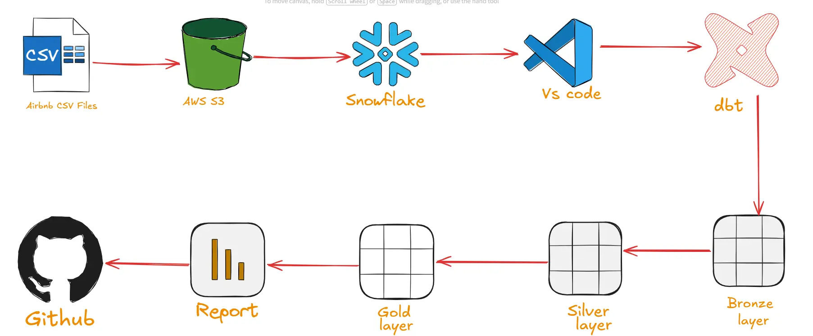
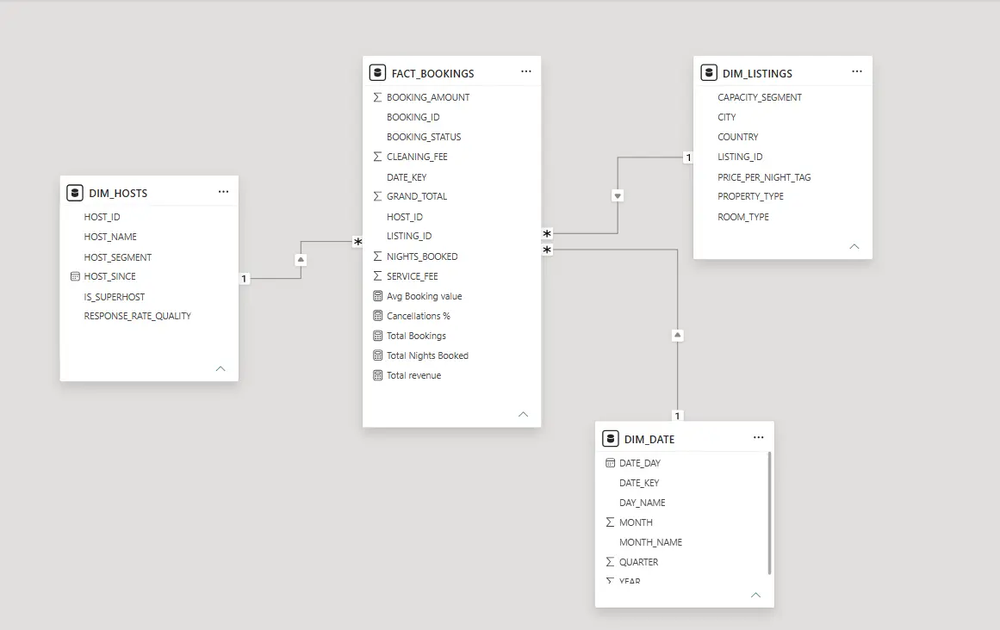

An end-to-end analytics engineering project that converts raw Airbnb booking, listing and host files into tested, analytics-ready Fact and Dimension tables.
AWS S3Snowflakedbt CoreSQLJinjaGitHub

Add image: images/airbnb/airbnb-architecture.webp
End-to-end project architecture
PROJECT OVERVIEW
From cloud files to trusted analytical models.
The source data was provided in three separate CSV files containing 5,000 bookings, 500 listings and 200 hosts. I stored the files in AWS S3, loaded them into Snowflake and used dbt to build a layered transformation pipeline.
The final Gold layer contains a booking Fact table, three business Dimensions, historical snapshot tables and an optional wide table for ad hoc analysis.
OBJECTIVE
Build a model that is modular, testable and easy to understand.
Load cloud-based source files into a Snowflake warehouse.
Separate raw, cleaned and analytics-ready transformation layers.
Preserve historical changes to Listing and Host attributes.
Create a booking-grain Fact table with reusable business Dimensions.
Validate keys, relationships and calculated booking values with dbt tests.
The Bronze layer contains source-aligned models for Bookings, Listings and Hosts.
Silver
The Silver layer cleans the source data and adds reusable business fields, including booking totals, additional fees, listing categories and host segments.
Snapshots
I implemented SCD Type 2 snapshots for Listings and Hosts so changes to their attributes can be preserved over time.
Gold
The Gold layer contains FACT_BOOKINGS, DIM_LISTINGS, DIM_HOSTS, DIM_DATE and an optional OBT for ad hoc analysis.
A booking-grain Fact connected to three Dimensions.
FACT_BOOKINGS contains one row per booking and connects to Listing, Host and Date Dimensions. The Dimensions contain selected business attributes for filtering and grouping, while historical versions remain available in the snapshot tables.
FACT_BOOKINGS
Booking measures with Listing, Host and Date foreign keys.
DIM_LISTINGS
Current property, room, location, capacity and price segments.
DIM_HOSTS
Current host, superhost, response quality and host segment attributes.
DIM_DATE
Calendar attributes for date-based analysis.

Add image: images/airbnb/airbnb-star-schema.webp
Final Fact and Dimension model
DATA QUALITY
32 dbt tests across the project.
Unique tests for business and primary keys.
Not-null tests for required identifiers and measures.
Relationship tests between FACT_BOOKINGS and all three Dimensions.
A custom test for positive calculated booking amounts.
Fixed a project-wide parsing issue that was preventing snapshots from running.
Corrected the Host relationship while building the booking Fact table.
Exposed calculated booking fields required by the custom data test.
Corrected YAML structure for Fact-to-Dimension relationship tests.
Reduced the Gold Dimensions to business-relevant attributes.
DATASET LIMITATION
Reporting the source data responsibly.
Approximately 49% of the supplied booking records are cancelled. Because this is a learning dataset, I do not treat this rate as representative of real Airbnb operations.
For production reporting, completed bookings, cancellations, refunds and cancellation reasons should be modelled separately before calculating executive revenue KPIs.
FINAL OUTCOME
Practical analytics engineering experience across the full pipeline.